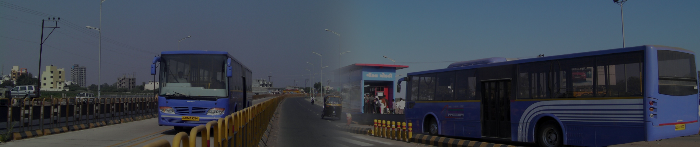

HOME
ABOUT US
SERVICES
TENDER
CONTACT US
MENU
Bus Time Table
Select Bus No
R 1- Trikonbaug To Saurashtra University
R 2- Raiya Village To Pradhyuman Park
R 3 - Madhapar Chowk to Jivraj Park
R 4- Ajidam to G.I.D.C. Gate 3
R 5- Raiya Village (Shilpan Onyx) To Tramba Village
R 6- Tramba Village To Santoshinagar (Shivalay Chowk)
R 7- Bhaktinagar Circle To Bajarangavadi Circle
R 8- Mavdi Village To Greenland Chowk
R 9- Trikon Baug to Arpit Engg. College
R 11- Trikon Baug to Shapar Veraval
R 13- Kothariya Chowk To Lalbahadu Shastri Avas
R 14- Kothariya Village To Navagam
R 15- Kothariya Village To G.I.D.C. Gate 3
R 16- Kothariya Village To Saurashtra University
R 17- Saurashtra University To Tramba Village
R 18- Ajidam to G.I.D.C. Gate 3
R 19- Vavdi gam (Akar Heights) to 131 Slum Quarters
R 20- Ghanteshvar S.R.P. Camp To Shapar Veraval
R 21- Santiniketan Avenue(Raiya Gaam) to Marketing Yard
R 22- Santiniketan Avenue to H N Shukla CollegeMarketing Yard
R 23- Khodal chowk(Mavdi village) to Pradhuman Park
R 24- Trikonbaug To G.I.D.C. Metoda Gate 3
R 25- 131 Slam Quarter To Jivraj Park
R 26- Vavdi Gaam to Santoshinagar (Shyamji Krushna Verma Township)
R 27- Trikonbaug To Raiyadhar Slum Quarter
R 28- Gujarat Housing Board Quarter To Jivaraj Park
R 30- Trikonbaug To Trikonbaug Circular - 7
R 31- Trikonbaug To Trikonbaug Circular - 8
R 32- Tramba Village To Parsananagar
R 34- Munjaka To Marketing Yard
R 35- Triokonbag To Shapar Veraval
R 36- Bhaktinagar Circle To Nyara Gam Chokdi
R 37- Vinod Nagar To Chhatrapati Shivaji Township
R 38- Aji Dam To Madhapar Village
R 40- Saurastra University To Santoshinagar (Shivalay Chowk)
R 41- Vinodnagar to Gangotri Park
R 42- Greenland Chokdi To Jivraj Park
R 43- Om Residency (Morbi Road Crosing) To Akshar Vatika
R 44- Trikonbag To Tramba Village
R 45- Saurashtra University To Ratanpar Village
R 46- Trikonbaug To Arpit Engg. College(Hadala Gaam)
R 47- Kothariya Village To saurashtra university
R 51- Ghanteshvar S.R.P. Camp To Punitnagar
R 54- Kothariya Chowk To Ghanteshvar S.R.P. Camp (G company)
R 55- Gondal Chowk To Ratnapar (Ramji Mandir)
R 57- Trikonbaug To Government Engineering College
Get Bus Info
Copyright © 2021 Rajkot Rajpath Ltd, All rights reserved.